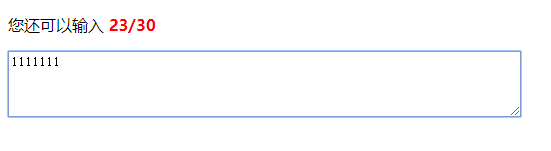

JS DOM设置元素属性
设置id为box的这个元素的文字颜色,属性是减号连接的复合形式时
必需要转换为驼峰形式
var box=document.getElementById("box");
box.style.color='#f00';
box.style.fontWeight="bold";
var lis=document.getElementById("list").getElementsByTagName("li");
// 遍历每一个li
for(var i=0,len=lis.length;i<len;i++){
lis[i].style.color='#00f';
if(i==0){
lis[i].style.backgroundColor="#ccc";
}else if(i==1){
lis[i].style.backgroundColor="#666";
}else if(i==2){
lis[i].style.backgroundColor="#999";
}else{
lis[i].style.backgroundColor="#333";
}
}innerHTML获取和设置标签之间的文本和html内容
className重新设置类，会替换掉原来的类
如果元素有多个class属性值，那么会全部获取到
var lis=document.getElementById("list").getElementsByTagName("li");
for(var i=0,len=lis.length;i<len;i++){
console.log(lis[i].innerHTML);
lis[i].innerHTML+='程序';
lis[1].className="current";
}
console.log(document.getElementById("box").className);属性设置与获取
var p=document.getElementById("text");
var user=document.getElementById("user"); // null
console.log(p.getAttribute("class")); //p.className
console.log(user.getAttribute("validate"));
// 给p设置一个data-color的属性
p.setAttribute("data-color","red");
// 给input设置一个isRead的属性
user.setAttribute("isRead","false");
// 删除p上的align属性
p.removeAttribute("align");JS事件：
鼠标事件
onload 页面加载
onclick 鼠标点击
onmouseover 鼠标划入
onmouseout 鼠标离开
onmousemove 鼠标在目标内移动
onfocus 获得焦点
onblur 失去焦点
onchange 内容改变时
在事件触发函数中，this是指对该DOM元素的引用
<input type="button" value="弹 出" onclick="alert('我是按钮')">
<!--鼠标划过按钮时调用mouseoverFn的函数-->
<div class="btn" onmouseover="mouseoverFn(this,'#f00')" onmouseout="mouseoutFn(this,'#ff0')">开始</div>
<div class="btn" onmouseover="mouseoverFn(this,'#0f0')" onmouseout="mouseoutFn(this,'#333')">结束</div>
<script>
function mouseoverFn(btn,bgColor){
// 鼠标划过按钮时，按钮的背景变为红色
btn.style.background=bgColor;
}
function mouseoutFn(btn,bgColor){
btn.style.background=bgColor;
}DOM 0级
通过DOM获取元素
元素.事件=脚本
执行脚本可以是一个匿名函数，也可以直接调用函数，如果调用函数，语法是：ele.事件=函数名，不加括号
<!doctype html>
<html lang="en">
<head>
<meta charset="UTF-8">
<title>demo</title>
<style>
.lock{width:140px;height:30px;line-height: 30px;background:#00f;
color:#fff;font-size:14px;text-align:center;border-radius:5px;
cursor:pointer;margin-top:30px;}
.unlock{width:140px;height:30px;line-height: 30px;background:#666;
color:#ccc;font-size:14px;text-align:center;border-radius:5px;
cursor:pointer;margin-top:30px;}
</style>
</head>
<body>
<div class="lock" id="btn">锁定</div>
<script>
// 获取按钮
var btn=document.getElementById("btn");
function clickBtn(){
alert("我是按钮");
}
// 点击按钮调用clickBtn这个函数
btn.onclick=clickBtn;
// 给按钮绑定事件,this是对该DOM元素的引用
btn.onclick=function(){
// 判断如果按钮是锁定，则显示为解锁，变为灰色，否则显示为锁定，变为蓝色
if(this.className=="lock"){
this.className="unlock";
this.innerHTML="解锁";
}else{
this.className="lock";
this.innerHTML="锁定";
}
}
</script>
</body>
</html>window.onload会在网页中的所有元素（文本、图像、CSS样式等）加载完后才触发执行
<!doctype html>
<html lang="en">
<head>
<meta charset="UTF-8">
<title>Document</title>
<script>
// 页面加载时执行，unload页面卸载
// 如果不加window.onload，那么执行脚本时会找不到div元素
window.onload=function(){
// 获取box
var box=document.getElementById("box");
var clicked=function(){
alert('我被点击了');
}
box.onclick=clicked;
}
</script>
</head>
<body>
<div id="box">这是一个DIV</div>
</body>
</html>change事件,一般作用域select或checkbox或radio
menu.selectedIndex 获取select中被选中的元素的下标
<!doctype html>
<html lang="en">
<head>
<meta charset="UTF-8">
<title>Document</title>
<script>
// 页面加载
window.onload=init;
// 初始化
function init(){
// 获取下拉菜单
var menu=document.getElementById("menu");
// 给菜单绑定change事件,一般作用域select或checkbox或radio
menu.onchange=function(){
// 获取当前选中的值
//var bgcolor=this.value;
var bgcolor=menu.options[menu.selectedIndex].value;
// 如果bgcolor为空，则下面的脚本将不执行
// if(bgcolor=="")return;
// 设置body的背景色
// 如果bgcolor为空，则将背景色设为白色，否则是选择的颜色
if(bgcolor==""){
document.body.style.background="#fff";
}else{
document.body.style.background=bgcolor;
}
}
}
</script>
</head>
<body>
<div class="box">
请选择您喜欢的背景色：
<select name="" id="menu">
<option value="">请选择</option>
<option value="#f00">红色</option>
<option value="#0f0">绿色</option>
<option value="#00f">蓝色</option>
<option value="#ff0">黄色</option>
<option value="#ccc">灰色</option>
</select>
</div>
</body>
</html>鼠标事件：
onsubmit 表单提交
onmousedown 鼠标按下
onmousemove 鼠标移动
onmouseup 鼠标松开
onresize 浏览器窗口大小调整
onscroll 拖动滚动条
<!doctype html>
<html lang="en">
<head>
<meta charset="UTF-8">
<title>Document</title>
<style>
body{height:2000px;}
.box{width:200px;height:200px;background:#f00;overflow:auto;}
</style>
</head>
<body>
<div class="box" id="box">
<p>拖动</p>
<p>拖动</p>
<p>拖动</p>
<p>拖动</p>
<p>拖动</p>
<p>拖动</p>
<p>拖动</p>
<p>拖动</p>
<p>拖动</p>
<p>拖动</p>
</div>
<script>
var box=document.getElementById("box");
// 绑定按下的事件
box.onmousedown=function(){
console.log("我被按下了");
}
// 绑定移动的事件
box.onmousemove=function(){
console.log("我被移动了");
}
// 绑定松开的事件
box.onmouseup=function(){
console.log("我被松开了");
}
// 绑定点击的事件
box.onclick=function(){
console.log("我被点击了");
}
// 浏览器窗口尺寸发生改变时
window.onresize=function(){
console.log("我的尺寸被改变了");
}
// 拖动滚动条
window.onscroll=function(){
console.log("我被拖动了");
}
box.onscroll=function(){
console.log("我是DIV的滚动条");
}
</script>
</body>
</html>键盘事件：
onkeydown 按下键盘
onkeypress按下键盘（只有字母和数字符号）
onkeyup 松开键盘
keyCode 返回键码或者字符代码
<!doctype html>
<html lang="en">
<head>
<meta charset="UTF-8">
<title>Document</title>
<style>
.text span{font-weight:bold;color:#f00;}
em{font-style:normal;}
b{font-weight:normal;}
</style>
</head>
<body>
<div>
<p class="text">
<b id="showcount">您还可以输入</b>
<span id="totalbox"><em id="count">30</em>/30</span>
</p>
<div class="input">
<textarea name="" id="text" cols="70" rows="4"></textarea>
</div>
</div>
<script>
// 获取文本框及其他元素
var text=document.getElementById("text");
var total=30;
var count=document.getElementById("count");
var showcount=document.getElementById("showcount");
var totalbox=document.getElementById("totalbox");
// 绑定键盘事件
document.onkeyup=function(){
// 获取文本框值的长度
var len=text.value.length;
// 计算可输入的剩余字符
var allow=total-len;
var overflow=len-total;
// 如果allow小于0
if(allow<0){
showcount.innerHTML="您已超出"+overflow;
totalbox.innerHTML='';
}else{
showcount.innerHTML='您还可以输入';
totalbox.innerHTML='<em id="count">'+allow+'</em>/30';
}
}
</script>
</body>
</html>